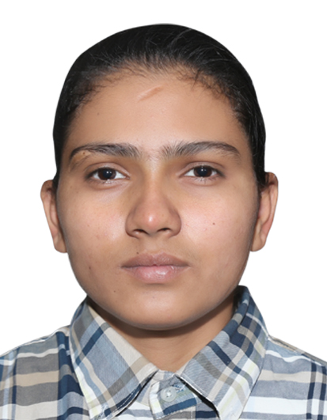

Hi, I am
Manjot Kaur
Full Stack Developer
Web Development
Cyber Security
Cloud Computing
Azure AI
System Design
Design Thinking
I am a passionate and dedicated full stack developer with a strong background in web development, cyber security, cloud computing, Azure AI, system design, and design thinking. With a keen eye for detail and a commitment to delivering high-quality solutions, I thrive in dynamic and collaborative environments. My expertise spans across both front-end and back-end development, allowing me to create seamless and efficient applications that meet user needs. I am constantly seeking new challenges and opportunities to expand my skill set and contribute to innovative projects.